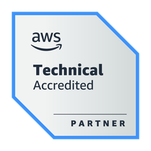
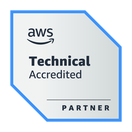

Engineering Delivery Manager with experience in handling programs & projects spanning product, platform development, research & solutioning across multiple customer engagements. I come with a strong technical leadership & engineering mindset, strategic planning & governance, decision making and people management skills driving innovation and enabling predictable delivery.
Education
Bachelor of Engineering (Mechanical) from Madras University (1999)
M.S. (Software Systems) from BITS Pilani (2007)
Work Experience
Deputy General Manager - HCLTech (2003 - Present)
Delivery Manager in Software Product Engineering division of HCLTech delivering programs/projects cutting across all product life cycle phases including research, exploration, prototyping, development, sustenance & sunsets
Strong technology and solutioning mindset with proven track record to present solutions, engineering roadmap & budgeting covering initiatives in Platform research & development, Application modernization, Digitalization for enterprises, building cloud native applications, SaaS enabling products
Strong experience in Program budgeting, Strategic governance, stakeholder management, benefits management, Team goal setting, periodic feedbacks, managing performance improvement plans, continuous improvements to operational efficiency through focused six sigma initiatives.
Senior Consultant - SAKSoft (2001 - 2003)
As Java developer - implemented projects for Morgan Stanley cards division for ETL workflow
Developed a web portal for Citibank Singapore (onsite) for their cards division
Developed Oracle stored procedures as part of backend services for Morgan Stanley cards division
Skills
Programming: Java, Python, Angular
Management: Microsoft Project, JIRA
Cloud: AWS
Awards & Certification
2 Patents awarded, and 2 ideas published with USPTO
Top 2 organization rating continously in the last 20 years with HCLTech

 
